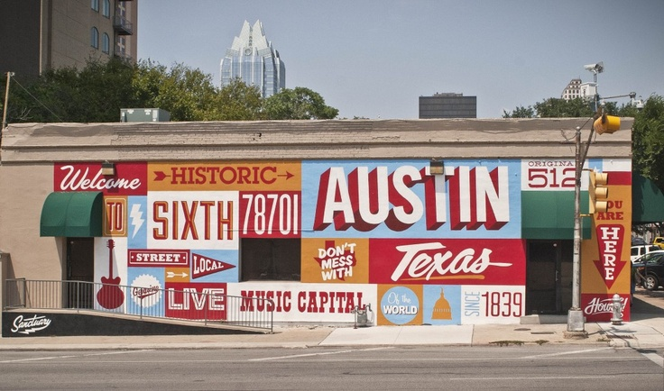

Austin, Texas
Austin is the state capital of Texas, an inland city bordering the Hill Country region. Home to the University of Texas flagship campus, Austin is known for its eclectic live-music scene centered around country, blues and rock. Its many parks and lakes are popular for hiking, biking, swimming and boating. South of the city, Formula One's Circuit of the Americas raceway has hosted the United States Grand Prix.